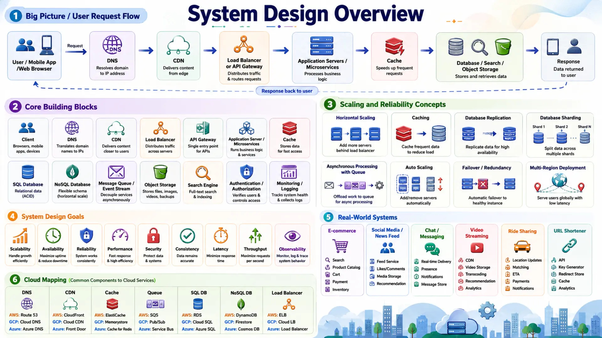

System Design Roadmap: From Beginner to Expert

📚 Table of Contents
🏗️ 1. What Is System Design?
System design is the process of defining how a large software system is built — its components, how they communicate, how data flows through them, and how the whole thing stays fast and reliable when millions of people use it at the same time. Think of it like being an architect: you don't write every line of code, but you decide where the walls go, how many floors there are, and what happens when the elevator breaks.
Unlike coding problems that have one correct answer, system design is open-ended. There are many valid approaches, and the goal is to make smart trade-offs based on the requirements in front of you. Should you use SQL or NoSQL? A single server or multiple? A cache or no cache? The right answer always depends on the scale, constraints, and priorities of the system.
Every product you use daily — from a messaging app to a streaming service to a ride-sharing platform — is the result of careful system design decisions made by engineering teams. Understanding how these systems work, what trade-offs their designers made, and why certain patterns appear again and again gives you a level of technical depth that is valuable whether you're building something new at work, growing as an engineer, or preparing for a technical discussion.
Key insight: System design is not about memorizing answers. It's about learning the building blocks — databases, caches, queues, load balancers — and knowing when and why to use each one. That's exactly what this series teaches, one topic at a time.
This blog post is your starting point. It lays out the complete roadmap: what you need to learn first (the prerequisites), the core system design concepts to master, and the real-world systems you'll design as practice. Each topic gets its own dedicated post so you can go deep at your own pace.
🎯 2. The 5-Step Design Framework
Whether you're designing a new feature at work, planning the architecture of a product from scratch, or thinking through a complex technical problem in a discussion, experienced engineers don't jump straight to solutions. They follow a deliberate, structured process that ensures nothing important gets missed — and that every decision can be justified.
Here's a five-step framework that works for any system design problem, regardless of the context:
| Step | What You Do | Why It Matters |
|---|---|---|
| 1. Clarify Requirements | Ask questions first. What features are in scope? How many users? Read-heavy or write-heavy? Mobile or web? | Prevents building the wrong thing. Requirements drive every design decision that follows. |
| 2. Estimate Scale | Put numbers on the problem — daily active users, requests per second, storage, bandwidth. Even rough estimates guide better decisions. | The right database for 10,000 users is often the wrong one for 10 million. Scale changes everything. |
| 3. High-Level Design | Sketch the main components: clients, services, databases, caches, queues, CDN. Draw how they connect and how data flows. | Creates a shared mental model. Exposes obvious gaps before you spend time on details. |
| 4. Deep Dive | Pick the hardest or most critical part and go deep — sharding strategy, cache invalidation, consistency model, failure handling. | Surface-level designs look fine until a real problem forces a deeper choice. Deep thinking reveals real constraints. |
| 5. Review & Iterate | Step back. What are the bottlenecks? What fails first? What would you change given more time or resources? | Good engineers know what their design can't do. Knowing the limits is part of the design. |
This sequence matters. Understanding requirements before designing prevents wasted effort. Estimating scale before choosing a database prevents picking the wrong tool. Deep-diving the hardest part early prevents discovering a fatal flaw too late. These five steps aren't a rigid checklist — they're a thinking habit that becomes second nature with practice.
The systems we'll design in Phase 3 — a URL shortener, a chat system, a video platform, a ride-sharing app, a news feed, and more — are excellent practice vehicles because they're familiar, operate at real scale, and each one exercises a different set of design patterns that apply far beyond the specific system itself.
Key mindset: There is no single correct design. Every choice involves a trade-off — faster reads vs. simpler writes, consistency vs. availability, flexibility vs. performance. The goal is to make the best decision for the given constraints and to be able to explain why.
🗺️ 3. The 4-Phase Learning Roadmap
Mastering system design is not something you do in a weekend. It's a layered skill — you need to understand the fundamentals before the big concepts make sense, and you need to understand the big concepts before you can design real systems confidently. This series is structured into four phases that build on each other.
| Phase | Focus | Topics | Goal |
|---|---|---|---|
| Phase 1 | Foundation Prerequisites | 11 categories covering networking, APIs, databases, scalability, security, and more | Build the vocabulary and mental model you need to understand system design |
| Phase 2 | Core System Design Concepts | 17 concepts — load balancers, data centers, caching, sharding, message queues, microservices, unique ID generation, and more | Learn each building block deeply so you can use it confidently in any design |
| Phase 3 | Real System Design Practice | 12 system designs — URL shortener, chat, YouTube, web crawler, notification system, search autocomplete, Google Drive, and more | Apply Phase 2 concepts by designing 12 real systems end to end, from requirements through deep-dive trade-offs |
| Phase 4 | Advanced System Design | 10 advanced systems — proximity service, Google Maps, Kafka deep dive, payment system, stock exchange, and more | Design expert-level systems that combine multiple Phase 2 patterns; tackle geospatial indexing, event sourcing, exactly-once semantics, and matching engines |
Think of Phase 1 as learning the language. Phase 2 as learning the grammar. Phase 3 as writing your first essays. You wouldn't try to write in a new language before you know the words — and you wouldn't try to design YouTube before you understand what a CDN or a message queue actually does.
How this series works: Each phase maps to a sequence of blog posts. Every post covers exactly one topic in depth. Follow them in order and you'll build up a solid mental model naturally.
📄 What Every Post Includes
Every topic post in this series follows the same structure so you always know what to expect:
| # | Section | What You'll Find |
|---|---|---|
| 1 | 🎯 Introduction | Simple, jargon-free definition of what the concept is |
| 2 | 💡 Why It Matters | Why large-scale systems need this and what breaks without it |
| 3 | 🏠 Real-world Analogy | A familiar, everyday comparison that makes the concept click instantly |
| 4 | 📖 Key Terms | All important vocabulary defined upfront — TTL, eviction, quorum, partition key, etc. |
| 5 | 🔢 How It Works | The full concept broken into digestible steps with a concrete worked example |
| 6 | 🔀 Types & Variations | The main flavours of this concept — e.g. cache-aside vs write-through, L4 vs L7 load balancer, SQL vs NoSQL |
| 7 | 🎨 Illustrated Diagram | A colorful, labelled architecture or data-flow diagram where helpful |
| 8 | ✅ When to Use | The situations that call for this pattern — and when to avoid it |
| 9 | 🏗️ Real-world Example | How a known product (YouTube, Uber, WhatsApp, etc.) applies this in production |
| 10 | ⚖️ Trade-offs | What you gain and what you sacrifice — with concrete comparisons |
| 11 | 🚫 Common Mistakes | The most frequent design errors on this topic and how to avoid them |
| 12 | 📝 Summary | A quick-reference recap of all key points from the post |
| 13 | 🏋️ Design Challenge | A practical design exercise to apply what you just learned — with a reveal button to show the answer |
| 14 | ☁️ Cloud Service Mapping | AWS (primary) + GCP and Azure equivalents for every concept covered |
📚 4. Phase 1: Foundation Prerequisites
Before you can design large-scale systems, you need a solid foundation. These are the concepts that system design topics are built on top of. If you jump straight to "Design YouTube" without knowing what a database index is or how TCP works, the answers won't make sense. Phase 1 covers 11 categories — each one addressed in its own post with beginner-friendly explanations and real-world examples.
1. Networking Basics
- Client & Server
- IP Address & DNS
- HTTP / HTTPS
- TCP vs UDP
- Latency & Throughput
2. API Basics
- What is an API? — definition, request & response cycle, JSON
- REST & HTTP — REST style, HTTP methods, status codes
- API Authentication — OAuth, JWT, API keys, token-based auth
3. Core Backend Concepts
- Servers — web server (serves files) vs application server (runs logic)
- Storage — databases for structured data, object storage for files & media
- Background Processing — background jobs, cron jobs, async workers outside the request path
- Stateless vs Stateful — why stateless services scale better and what it means
☁️ AWS: EC2 · S3 · Lambda | GCP: Compute Engine · Cloud Storage · Cloud Functions | Azure: VMs · Blob Storage · Azure Functions
4. Database Basics
- Core Database Concepts — primary keys, indexes, queries, transactions, ACID, schema design
- SQL vs NoSQL — types, key differences, when to choose each
☁️ AWS: RDS / Aurora (SQL) · DynamoDB (NoSQL) | GCP: Cloud SQL / Firestore | Azure: Azure SQL / Cosmos DB
5. Scalability Basics
- Scaling Techniques — vertical scaling, horizontal scaling, auto-scaling, load balancers
- Scaling Challenges — bottlenecks, single points of failure
☁️ AWS: Elastic Load Balancing · Auto Scaling | GCP: Cloud Load Balancing · Managed Instance Groups | Azure: Load Balancer · Scale Sets
6. Caching & CDN
- Cache — stores data in memory for fast access (hit, miss, TTL, eviction)
- Cache invalidation strategies (write-through, cache-aside)
- Redis as an in-memory cache
- CDN — delivers static content from edge locations near users
- Edge servers & origin servers
☁️ Cache — AWS: ElastiCache · GCP: Memorystore · Azure: Cache for Redis | CDN — AWS: CloudFront · GCP: Cloud CDN · Azure: Front Door
7. Message Queues & Async
- Queue Fundamentals — what a queue is, producers, consumers, how messages flow
- Reliability Patterns — async processing, retry mechanisms, dead-letter queues
☁️ AWS: SQS · SNS · EventBridge | GCP: Pub/Sub · Eventarc | Azure: Service Bus · Event Grid
8. Back-of-the-Envelope Estimation
- Daily active users (DAU)
- Requests per second (RPS)
- Storage estimation
- Bandwidth estimation
- Read / write ratio
- Peak traffic planning
☁️ AWS: Pricing Calculator · GCP: Pricing Calculator · Azure: Pricing Calculator — use these to practise real cost and capacity estimates
9. Reliability & Availability
- Concepts & Metrics — availability vs reliability, SLA, the "nines" (99% to 99.9999%)
- Design Patterns — redundancy, data replication, failover strategies, disaster recovery
10. Security Basics
- Identity & Access — authentication, authorization, OAuth 2.0, JWT tokens
- Data Protection — encryption in transit & at rest, rate limiting
11. Observability Basics
- The Three Pillars — logs, metrics, distributed tracing
- Alerting & Automation — alerts, dashboards, CI/CD pipelines
☁️ AWS: CloudWatch | GCP: Cloud Monitoring / Cloud Logging | Azure: Azure Monitor
Don't skip Phase 1. These topics might sound basic, but every Phase 2 concept builds directly on them. A solid Phase 1 makes Phase 2 feel obvious instead of overwhelming.
⚙️ 5. Phase 2: Core System Design Concepts
Phase 2 is the heart of the series. These are the 17 foundational concepts that underpin virtually every large-scale system in production today. You'll learn each one from scratch — what it is, why it exists, how it works, the trade-offs it introduces, and how real companies use it. By the end of Phase 2, you'll be able to reason through any of these confidently and apply them in real engineering decisions.
Group A Scaling & Architecture Fundamentals
The foundation of thinking at scale. Every large system starts here.
| # | Topic | What You'll Learn | ☁️ Cloud Services |
|---|---|---|---|
| 1 | Scalability Patterns | What it means for a system to scale; vertical scaling (adding more power) vs horizontal scaling (adding more servers); the limits of each and when to switch | AWS EC2 (vertical) · Auto Scaling (horizontal) · GCP Compute Engine · Azure VMs + Scale Sets |
| 2 | Client-Server Architecture | The foundational model that almost every internet system is built on | — |
| 3 | Load Balancer | How traffic is distributed across multiple servers, and which algorithms are used | AWS Elastic Load Balancing · GCP Cloud Load Balancing · Azure Load Balancer / App Gateway |
| 4 | Data Centers & Multi-Region | How geo-routing directs users to the nearest data center, and how systems stay available when an entire region fails | AWS Route 53 · Regions · Availability Zones · GCP Cloud DNS · Regions · Azure Traffic Manager · Regions |
Group B Data & Storage
Every system stores data. Understanding the theory (CAP Theorem, Consistent Hashing) before the implementation details (Replication, Sharding) makes the design decisions click into place.
| # | Topic | What You'll Learn | ☁️ Cloud Services |
|---|---|---|---|
| 5 | Caching | How to store frequently accessed data in memory to cut latency dramatically | AWS ElastiCache (Redis / Memcached) · GCP Memorystore · Azure Cache for Redis |
| 6 | Database Indexing | Why indexes exist, how B-tree indexes work, and when to use them | AWS RDS / Aurora · GCP Cloud SQL · Azure SQL Database |
| 7 | SQL vs NoSQL | When to use relational databases and when to use document, key-value, or columnar stores | AWS RDS/Aurora (SQL) · DynamoDB (NoSQL) · GCP Cloud SQL / Firestore · Azure SQL / Cosmos DB |
| 8 | CAP Theorem | Why distributed systems must choose between consistency and availability when a partition occurs | — (theoretical foundation; applies when choosing any distributed DB) |
| 9 | Consistent Hashing | How to distribute data evenly across nodes while minimising reshuffling when nodes change | Used internally by ElastiCache · DynamoDB (AWS) · Bigtable (GCP) · Cosmos DB (Azure) |
| 10 | Database Replication & Sharding | Replication: how data is copied across machines for availability and read performance. Sharding: how to split a database horizontally when one server is not enough | Replication — AWS RDS Multi-AZ · GCP Cloud SQL HA · Azure SQL Geo-Replication | Sharding — AWS DynamoDB/Aurora · GCP Bigtable · Azure Cosmos DB |
Group C Infrastructure & Distributed Patterns
The infrastructure patterns and architectural styles that appear in almost every large-scale production system.
| # | Topic | What You'll Learn | ☁️ Cloud Services |
|---|---|---|---|
| 11 | CDN | How content delivery networks serve static assets from locations close to the user | AWS CloudFront · GCP Cloud CDN · Azure Front Door / CDN |
| 12 | Message Queues | How queues decouple producers from consumers and enable async, resilient workflows | AWS SQS (queue) · SNS / EventBridge (pub/sub) · GCP Pub/Sub · Azure Service Bus / Event Grid |
| 13 | Rate Limiting | How to protect services from abuse and ensure fair usage across clients | AWS API Gateway · WAF · GCP Cloud Armor / Apigee · Azure API Management |
| 14 | Microservices & API Gateway | Microservices: breaking a system into small, independently deployable services. API Gateway: the single entry point handling routing, authentication, and rate limiting in front of those services | Services — AWS ECS/EKS/Lambda · GCP Cloud Run/GKE · Azure Container Apps/AKS | Gateway — AWS API Gateway · GCP Apigee · Azure API Management |
Group D Estimation
Before designing anything, you need to know the scale you're designing for. This is a skill in itself.
| # | Topic | What You'll Learn | ☁️ Cloud Services |
|---|---|---|---|
| 15 | System Design Estimation | Power of two · latency reference numbers · availability nines · estimating DAU, QPS, storage and bandwidth — with a worked Twitter-scale example | AWS Pricing Calculator · GCP Pricing Calculator · Azure Pricing Calculator |
Group E Advanced Distributed Internals
These two topics go deeper than the standard concepts — they teach the internals of distributed systems that appear in advanced designs and senior-level discussions.
| # | Topic | What You'll Learn | ☁️ Cloud Services |
|---|---|---|---|
| 16 | Unique ID Generation at Scale | Why auto-increment fails in distributed systems; UUID trade-offs; Twitter Snowflake (timestamp + machine ID + sequence); sortable IDs and clock skew handling | No managed cloud service — implemented at application layer using Redis INCR, Snowflake pattern, or DB sequences |
| 17 | Key-value Store Internals | Quorum reads/writes (N/W/R), vector clocks for conflict resolution, gossip protocol for failure detection, Merkle trees for anti-entropy, LSM trees & SSTables for write-optimised storage | AWS: DynamoDB · GCP: Bigtable / Firestore · Azure: Cosmos DB |
Pro tip: You don't need to memorise every concept perfectly. You need to understand each one well enough to reason through its trade-offs and decide when to apply it. That depth of understanding — not surface-level recall — is what these posts are designed to give you.
🏗️ 6. Phase 3: Real System Design Practice
Phase 3 covers 12 system designs that each teach a different set of patterns. Each post takes one classic or important system design challenge and walks through a complete solution — requirements clarification, scale estimation, high-level design, component deep dives, and trade-off discussions. Working through real systems is how concepts stop feeling abstract and start feeling intuitive.
Each system is chosen deliberately. A URL shortener teaches hashing. A chat system introduces WebSockets. A web crawler teaches distributed BFS and bloom filters. A notification system teaches fan-out at scale. A search autocomplete teaches trie data structures. Together, these 12 systems cover a wide range of design patterns that apply far beyond the specific systems themselves.
| # | System | Real-World Reference | Key Concepts Practiced |
|---|---|---|---|
| 1 | URL Shortener | bit.ly, TinyURL | Hashing, redirection, analytics, key generation at scale |
| 2 | News Feed | Facebook, LinkedIn | Fan-out on write vs read, ranking algorithms, timeline generation |
| 3 | Notification System | WhatsApp, Slack, iOS/Android | APNs / FCM push, SMS / email delivery pipelines, fan-out service, device token management, deduplication |
| 4 | Web Crawler | Googlebot, Common Crawl | Distributed BFS, URL deduplication via bloom filter, politeness protocols, crawl rate limiting, content parsing at scale |
| 5 | Search Autocomplete | Google Search, Amazon search | Trie data structure, prefix caching, frequency ranking, real-time typeahead, distributed trie sharding |
| 6 | Chat System | WhatsApp, Slack | WebSockets, real-time messaging, message storage, online presence |
| 7 | Photo Sharing App | Photo storage, feed generation, notifications, CDN for media | |
| 8 | Social Network / Twitter | Twitter/X | Tweet storage, timeline generation, search at scale, fan-out at extreme scale |
| 9 | File Storage (Google Drive) | Google Drive, Dropbox, OneDrive | File chunking, block storage, delta sync, metadata DB + blob store separation, conflict resolution, versioning |
| 10 | Video Platform | YouTube, Netflix | Video encoding, CDN delivery, distributed storage, adaptive bitrate |
| 11 | Ride-Sharing App | Uber, Lyft | Geospatial indexing, real-time location tracking, driver-rider matching |
| 12 | End-to-End System Design | Full design challenge | Complete system design from requirements through deep-dive trade-offs — putting all concepts together |
Why these 12? These 12 systems are widely used in the real world and collectively cover almost every major pattern in distributed systems design. Each one teaches something the others don't. Master these, and you'll have a solid toolkit before moving to Phase 4.
🚀 7. Phase 4: Advanced System Design
Phase 4 covers advanced system designs from ByteByteGo's Volume 2 — systems that require combining multiple core concepts simultaneously and reasoning about subtle trade-offs at extreme scale. Each system here introduces at least one architectural pattern you won't encounter in Phase 3: geospatial indexing, event sourcing, exactly-once semantics, low-latency matching engines, and more.
Complete Phases 1, 2, and 3 before starting here. The concepts in this phase — delivery semantics, distributed transactions, erasure coding, double-entry bookkeeping — build directly on the foundation you built in Phase 2.
| # | System | Real-World Reference | Key Advanced Concepts |
|---|---|---|---|
| 1 | Proximity Service | Yelp, Google Places | Geohash, quadtree, radius search, PostGIS vs Redis GEO |
| 2 | Nearby Friends | Facebook Nearby Friends | WebSocket location updates, Redis GEO, follower fan-out, presence tracking |
| 3 | Google Maps | Google Maps, Waze | Graph routing (Dijkstra / A*), map tile serving, ETA prediction, traffic data feeds |
| 4 | S3-like Object Storage | Amazon S3, MinIO | Blob storage internals, multipart upload, erasure coding, object versioning, geo-replication |
| 5 | Distributed Message Queue (Deep Dive) | Apache Kafka, Amazon Kinesis | Delivery semantics (at-most / at-least / exactly-once), consumer groups, partition rebalancing, log compaction |
| 6 | Metrics Monitoring & Alerting | Prometheus, Datadog, Grafana | Pull vs push collection, time-series DB, cardinality limits, anomaly detection, alerting pipelines |
| 7 | Ad Click Event Aggregation | Google Ads, Meta Ads | Lambda / Kappa architecture, MapReduce, watermarking, exactly-once aggregation at massive scale |
| 8 | Hotel Reservation System | Booking.com, Airbnb | Distributed transactions, idempotency, optimistic / pessimistic locking, overbooking prevention |
| 9 | Payment System | Stripe, PayPal, Visa | PSP integration, double-entry bookkeeping, exactly-once semantics, idempotency, ledger reconciliation |
| 10 | Stock Exchange | NYSE, NASDAQ, Binance | Matching engine, order book, market data pub/sub, low-latency sequencing, HFT considerations |
Phase 4 prerequisites: These systems demand fluency in Phase 2 concepts — especially consistent hashing, CAP theorem, message queues, and database sharding. Don't rush Phase 4. Each system is a multi-hour deep dive that rewards the preparation you built in earlier phases.
✅ 8. Conclusion
System design is one of the most learnable skills in software engineering — and one of the highest-leverage ones for growing as an engineer. The gap between someone who says "I'd use a database and a cache" and someone who can explain exactly which database, which caching strategy, why, and what the trade-offs are is the gap between a beginner and a confident, well-rounded engineer. This series is designed to close that gap, one concept at a time.
The roadmap is straightforward: build your foundation in Phase 1 so you have the vocabulary, master the building blocks in Phase 2 so you have the toolkit, then apply everything in Phase 3 by working through real systems end to end. Each post in this series focuses on exactly one topic — explained simply, connected to real products, and grounded in how these decisions play out in practice.
- System design is about reasoning under ambiguity and thinking at scale — not memorising answers.
- Phase 1 covers 11 prerequisite categories that every system design concept builds on.
- Phase 2 covers 17 core concepts — the building blocks found in every large-scale production system.
- Phase 3 applies everything through 12 classic real-world system designs, from URL shorteners to file storage systems.
- Phase 4 goes deeper with 10 advanced systems — geospatial services, payment systems, stock exchanges, and more.
- Each topic gets its own dedicated post: beginner-friendly, real-world examples, practical trade-off analysis, and cloud service mappings.
📚 References
- System Design Interview (Vol. 1 & 2) — Alex Xu — Highly practical, example-driven books covering large-scale system design from the ground up.
- Designing Data-Intensive Applications — Martin Kleppmann — Deep dive into databases, distributed systems, and data engineering.
- ByteByteGo — Alex Xu's blog and newsletter — Visual explanations of real system design problems.
- High Scalability — Real architecture breakdowns from companies like Twitter, Netflix, and Airbnb.
- The System Design Primer (GitHub, donnemartin) — Open-source collection of system design study materials.